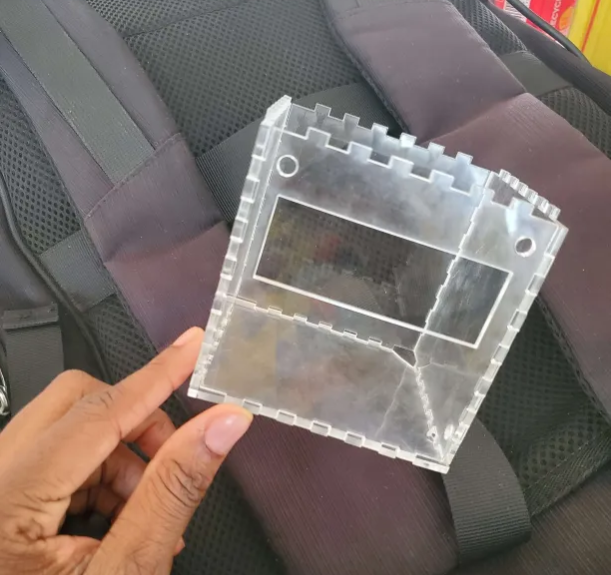
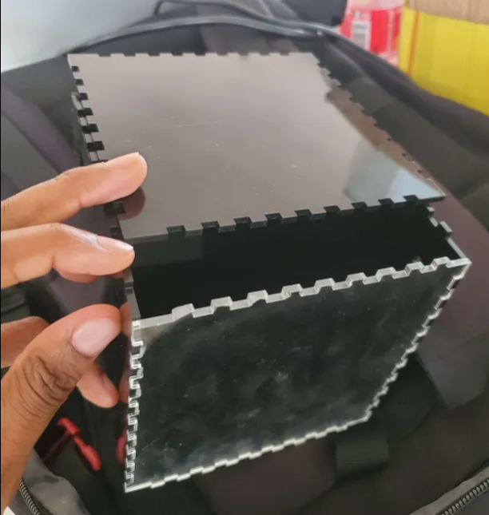
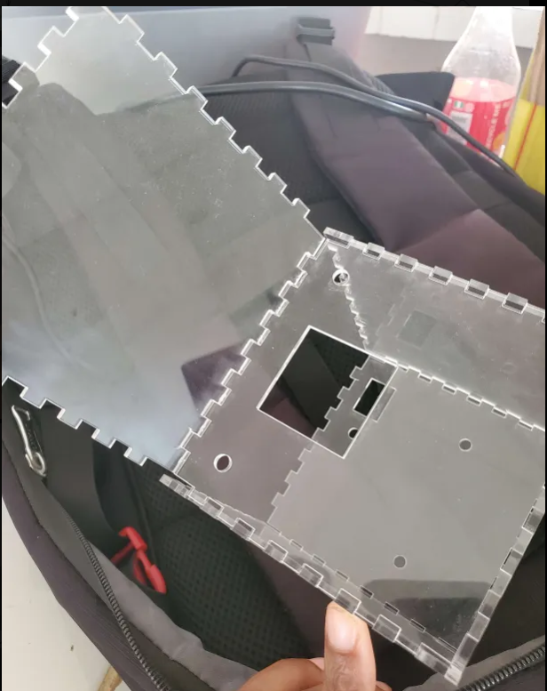

Test 2 : La boîte noire
Dans de nombreux domaines industriels tels que l'aéronautique, l'automobile ou encore le ferroviaire, il est indispensable de disposer de systèmes capables d'enregistrer en temps réel les paramètres de fonctionnement des engins. Ces systèmes, appelés communément boîtes noires, permettent de conserver des informations critiques relatives à l'activité de l'appareil.
En cas de dysfonctionnement ou d'accident, les données recueillies servent à analyser les événements ayant précédé l'incident et à comprendre ses causes.
Principe des boîtes noires industrielles
- Enregistrement de données physiques (vitesse, position, accélérations, etc.)
- Stockage des communications des opérateurs ou pilotes
- Conservation des données même après un arrêt brutal de l'appareil
Objectifs du test
Dans le cadre de la Tekbot Robotics Challenge, l'objectif de ce test est de concevoir une version simplifiée d'une boîte noire. Ce système devra être capable de :
- Mesurer la position et la vitesse de déplacement dans l'espace à l'aide d'un capteur combiné gyroscope et accéléromètre (MPU6050)
- Transmettre en temps réel ces données à une station de contrôle par l'intermédiaire d'une communication I2C
- Afficher les mesures reçues sur un écran LCD connecté à la station de contrôle
Structure du projet
Ce projet est divisé en deux parties principales :
- La boîte noire : une boîte autonome qui collecte les données de mouvement et les transmet
- La station de contrôle : un récepteur qui reçoit les données et les affiche à l'utilisateur
Choix du matériel
| Composants | Référence / Broches | Rôles |
|---|---|---|
| ATmega328P (Maître) | DIP28, SDA (A4), SCL (A5), INT (2) | Lecture MPU6050, maître I2C vers esclave externe |
| ATmega328P (Esclave) | DIP28, SDA (A4), SCL (A5) | Réception I2C, pilotage écran LCD |
| MPU6050 (GY-521) | I2C, adresse 0x68 | Accéléromètre + gyroscope, DMP intégré |
| Module MD_MAX72XX avec écran matriciel | SPI (DATA 11, CLK 13, CS 10) | Affichage matrice LED 8×8 (retour visuel de direction) |
| Écran LCD 16×2 I2C | SDA, SCL, VCC, GND | Affichage texte de la station de contrôle |
| Convertisseur USB-TTL | TX, RX, VCC, GND, DTR | Programmation et debug des ATmega328P |
| Quartz 16 MHz + Condensateurs | XTAL1/XTAL2 | Horloge stable pour chaque ATmega328P |
| Régulateur 5 V (AMS1117) | VIN (7–12 V) → VCC, GND | Alimentation régulée |
| LED témoin | Broche 9 (Maître) | Indicateur visuel d'envoi I2C |
| Veroboard | — | Montage définitif, soudure des composants |
Alimentation du système
Pour garantir le bon fonctionnement et la fiabilité de notre système, nous avons prévu deux sources d'alimentation distinctes :
Alimentation principale : adaptateur secteur
- Alimente l'ensemble du système, y compris la boîte noire
- Solution centralisée qui simplifie la gestion énergétique globale
Alimentation de secours : batterie interne (7.4V)
- Placée directement dans la boîte noire
- Assure l'autonomie du système en cas de coupure d'alimentation principale
Pourquoi avoir positionné la batterie dans la boîte noire ?
- Réduction des pertes par effet Joule : Évite les pertes énergétiques sur de longues distances de câbles
- Sécurité et fiabilité accrues : Garantit l'alimentation même en cas de choc ou déconnexion secteur
- Portabilité et simplicité de maintenance : Permet de déplacer la boîte sans câblage supplémentaire
- Robustesse globale : Protège la batterie contre les agressions extérieures (poussière, humidité, chocs)
Importance de l'écran matriciel
L'ajout d'un écran matriciel 8x8 dans la boîte noire apporte plusieurs avantages significatifs :

- Visualisation instantanée : Affiche des flèches directionnelles en temps réel
- Retour d'information : Permet de valider rapidement le bon fonctionnement du système
- Simplicité d'utilisation : Rend le système accessible et intuitif
- Intégration : Favorise une conception compacte et efficace
- Esthétique : Améliore l'apparence du projet
Architecture et fonctionnement
Objectifs pédagogiques
L'objectif pédagogique est de permettre aux participants de :
- Mettre en œuvre des communications entre microcontrôleurs
- Utiliser des capteurs inertiels pour mesurer des grandeurs physiques
- Organiser un projet de conception électronique complet, du prototype au système fonctionnel
Communication I2C
Le protocole I2C (Inter-Integrated Circuit) est une méthode de communication série largement utilisée dans les systèmes embarqués pour connecter des microcontrôleurs, capteurs et périphériques sur un même bus, en utilisant seulement deux fils :
- SDA (Serial Data Line) : pour la transmission des données
- SCL (Serial Clock Line) : pour la synchronisation de la transmission
Fonctionnement du bus I2C
- Maître et esclaves : un périphérique maître contrôle la communication et peut interroger un ou plusieurs périphériques esclaves
- Adresses uniques : chaque esclave possède une adresse unique pour une communication individuelle
- Protocole de communication :
- Le maître initie la communication par un signal de démarrage (Start)
- Il envoie l'adresse de l'esclave ciblé suivie d'un bit de lecture/écriture
- L'esclave concerné répond (ACK) et la transmission de données commence
- Après chaque octet transmis, le récepteur envoie un acquittement (ACK) ou un refus (NACK)
- La communication se termine par un signal d'arrêt (Stop)
Simplicité et flexibilité : Le bus I2C permet de connecter plusieurs composants avec un câblage minimal, ce qui simplifie l'intégration et la maintenance des systèmes embarqués.
Fonctionnement global
Le système fonctionne selon le processus suivant :
- À la mise sous tension, le microcontrôleur maître initialise le capteur MPU6050 et la communication avec le microcontrôleur esclave
- Il lit en continu les valeurs d'accélération et de rotation fournies par le capteur
- Ces données sont traitées et converties dans un format compréhensible
- L'écran matriciel affiche une direction correspondant à l'orientation détectée
- Le maître interroge l'esclave pour vérifier s'il est prêt à recevoir des données
- Une fois la confirmation obtenue, le maître envoie les données au second microcontrôleur
- L'esclave reçoit ces informations, décode le code directionnel, enregistre les données, puis affiche la direction sur l'écran LCD
- Le maître effectue une nouvelle interrogation pour obtenir la confirmation de réception
- Une LED clignote à chaque appel du microcontrôleur maître pour visualiser l'activité
Boîtiers imprimés en 3D
Dans le cadre de ce test, nous avons réalisé l'impression 3D de trois boîtes destinées à la boîte noire, à la station de contrôle et à l'alimentation.



Cette approche présente de nombreux avantages tant pratiques qu'esthétiques :
- Personnalisation et adaptabilité : Permet de concevoir des boîtes sur mesure pour chaque composant
- Protection des composants : Protège contre les chocs, la poussière et l'humidité
- Esthétique et présentation : Améliore l'apparence générale du projet
- Facilité d'accès : Ouvertures ou panneaux amovibles pour la maintenance
- Optimisation du câblage : Intègre des supports pour le câblage et les connexions
Réalisation du circuit
Test du microcontrôleur ATmega328P
Avant d'intégrer le microcontrôleur dans le circuit final, il est recommandé de le tester sur une breadboard :
- Montage minimal :
- Alimentation de 5V
- Cristal de 16MHz
- Deux condensateurs de 22pF
- Résistance de 10kΩ entre la broche RESET et Vcc
- Test de fonctionnement : Téléverser un code simple (ex: clignotement de LED) pour vérifier le bon fonctionnement
Gravure du bootloader
Le bootloader permet à l'ATmega328P d'être programmé comme un Arduino classique :
- Utiliser une carte Arduino comme programmateur
- Brancher les broches MOSI, MISO, SCK, RESET, Vcc et GND
- Dans l'IDE Arduino : sélectionner "Arduino as ISP", puis "Burn Bootloader"
- Choisir le modèle approprié (ATmega328 sur breadboard ou Arduino Uno)
Conception du schéma sous KiCad
Le schéma du circuit a été conçu pour mesurer les mouvements avec le capteur MPU6050 tout en intégrant l'écran matriciel :
- Les mesures sont traitées par l'ATmega328P
- Les résultats sont affichés sur l'écran LCD et l'écran matriciel
- Tous les composants communiquent via I2C
Soudure des composants
Étapes de soudure des composants :
- Préparation :
- Préchauffer le fer à souder (300-350°C)
- Nettoyer la panne
- Préparer les composants et le veroboard
- Soudure THT :
- Placer chaque composant
- Souder une patte, ajuster, puis souder les autres
- Couper l'excédent
Note : Utiliser un fil à souder fin (0,38 mm recommandé), éviter les ponts de soudure, et vérifier que chaque joint est brillant et conique. Inspecter visuellement et corriger les défauts éventuels.
Programmation et test du circuit assemblé
- Connexion du convertisseur USB-série aux broches RX, TX, Vcc, GND
- Téléversement du code de test (ex: clignotement de LED)
- Test fonctionnel :
- Microcontrôleur
- Communication I2C
- Alimentation
Explication du code
Rappels sur les objectifs du projet
Ce projet a pour but de :
- Lire l'orientation via le MPU6050 (accéléromètre + gyroscope)
- Afficher des flèches directionnelles sur une matrice LED 8x8 (contrôlée par MAX72xx)
- Transmettre les données à un autre microcontrôleur via I2C
- Recevoir une confirmation de l'esclave via une LED
Nous rappelons que le test 2 est une suite du test 1. Il y aura certaines lignes sur lesquelles nous ne détaillerons pas l'explication.
Code MASTER
Dans ce système, le MASTER (maître) est le microcontrôleur qui :
- Lit les données du capteur de mouvement MPU6050
- Détermine la direction et l'accélération
- Envoie ces informations à l'esclave via le protocole I2C
- Vérifie si l'esclave est prêt à recevoir ou a bien reçu les données
Bibliothèques utilisées
#include "I2Cdev.h"
#include "MPU6050_6Axis_MotionApps20.h"
#include <MD_MAX72xx.h>
#include <SPI.h>
Fonction des bibliothèques :
- Wire.h : gestion de la communication I2C
- I2Cdev.h : simplifie les opérations I2C
- MPU6050_6Axis_MotionApps20.h : accès aux fonctionnalités avancées du DMP
- MD_MAX72xx.h : contrôle de la matrice LED 8x8
- SPI.h : nécessaire pour la communication SPI
Définition du matériel et des objets
#define HARDWARE_TYPE MD_MAX72XX::FC16_HM
#define MAX_DEVICES 1 // 1 module de 8x8
#define CLK_PIN 11
#define DATA_PIN 12
#define CS_PIN 10
MD_MAX72XX mx = MD_MAX72XX(HARDWARE_TYPE, DATA_PIN, CLK_PIN, CS_PIN, MAX_DEVICES);
MPU6050 mpu;
int send_dir = 0;
float send_acc = 0;
const uint8_t addr_slav = 0x08;
int ledConfirm = 9;
#define INTERRUPT_PIN 2
volatile bool mpuInterrupt = false;
Variables de statut et buffers
bool dmpReady = false;
uint8_t mpwInitStatus;
uint8_t devStatus;
uint16_t packetSize, fifoCount;
uint8_t fifoBuffer[64];
Quaternion q;
VectorFloat gravity;
float ypr[3];
VectorInt16 aa, aaReal;
float prevYaw = 0, prevPitch = 0, prevRoll = 0;
const float seuilAngle = 5.0; // Seuil en degrés pour rotations
const int seuilAccZ = 600; // À ajuster après calibration
float accZ_filtered = 0;
const float alpha = 0.3; // coefficient filtre passe-bas
String direction = "";
Explication des variables :
dmpReady, devStatus: indiquent l'état d'initialisation et de disponibilité du DMPpacketSize, fifoCount, fifoBuffer: gèrent la lecture depuis le FIFO du DMPq, gravity, ypr: pour calculer quaternion, vecteur gravité et angles yaw/pitch/rollaa, aaReal: accélérations brutes et linéairesprevYaw/Pitch/Roll: pour calculer les variations et détecter le mouvementseuilAngle, seuilAccZ: seuils de détectionaccZ_filtered, alpha: filtre passe-bas sur l'accélération verticaledirection: chaîne représentant le mouvement détecté
Fonction setup() - Initialisation
// Initialisation des communications
Wire.begin();
Serial.begin(115200);
Serial.print("Init MPU6050...");
delay(1000);
// Configuration des broches et du capteur
mpu.initialize();
pinMode(INTERRUPT_PIN, INPUT);
pinMode(ledConfirm, OUTPUT);
// Offsets calibrés
mpu.setXAccelOffset(874);
mpu.setYAccelOffset(-853);
mpu.setZAccelOffset(-21);
mpu.setXGyroOffset(-59);
mpu.setYGyroOffset(20);
mpu.setZGyroOffset(-57);
devStatus = mpu.dmpInitialize();
if (devStatus == 0) {
mpu.CalibrateAccel(6);
mpu.CalibrateGyro(6);
mpu.setDMPEnabled(true);
attachInterrupt(digitalPinToInterrupt(INTERRUPT_PIN), dmpDataReady, RISING);
mpuIntStatus = mpu.getIntStatus();
dmpReady = true;
packetSize = mpu.dmpGetFIFOPacketSize();
Serial.print("MPU6050 pret!");
delay(1000);
} else {
Serial.print("Erreur DMP:");
Serial.print(devStatus);
while (1);
}
// Initialisation de la matrice LED
mx.begin();
mx.control(MD_MAX72XX::INTENSITY, 5);
mx.clear();
}
Boucle principale - loop()
// Vérifications initiales
if (!dmpReady) return;
if (!mpuInterrupt && fifoCount < packetSize) return;
mpuInterrupt = false;
// Gestion du FIFO
mpuIntStatus = mpu.getIntStatus();
fifoCount = mpu.getFIFOCount();
if ((mpuIntStatus & 0x10) || fifoCount == 1024) {
mpu.resetFIFO();
Serial.print("Overflow FIFO!");
return;
}
while (fifoCount < packetSize) fifoCount = mpu.getFIFOCount();
mpu.getFIFOBytes(fifoBuffer, packetSize);
fifoCount -= packetSize;
// Acquisition et calcul des données
mpu.dmpGetQuaternion(&q, fifoBuffer);
mpu.dmpGetGravity(&gravity, &q);
mpu.dmpGetYawPitchRoll(ypr, &q, &gravity);
float yaw = ypr[0] * 180/M_PI;
float pitch = ypr[1] * 180/M_PI;
float roll = ypr[2] * 180/M_PI;
mpu.dmpGetAccel(&aa, fifoBuffer);
mpu.dmpGetLinearAccel(&aaReal, &aa, &gravity);
float acc = sqrt(pow(aaReal.x, 2) + pow(aaReal.y, 2) + pow(aaReal.z, 2));
accZ_filtered = alpha * aaReal.z + (1 - alpha) * accZ_filtered;
// Détection de la direction et affichage
detectDirection(yaw, pitch, roll, accZ_filtered);
if (direction == "Haut") {
send_dir = 0;
displayArrowUp();
} else if (direction == "Bas") {
send_dir = 1;
displayArrowDown();
} else if (direction == "Droite" || direction == "Rot Droite") {
send_dir = 2;
displayArrowRight();
} else if (direction == "Gauche" || direction == "Rot Gauche") {
send_dir = 3;
displayArrowLeft();
} else if (direction == "Avant") {
send_dir = 4;
displayCenterDot();
} else if (direction == "Arriere") {
send_dir = 5;
displayCenterDot();
}
// Transmission I2C vers l'esclave
if(slaveConfirm()) {
clignotLed();
Wire.beginTransmission(addr_slav);
Wire.write((uint8_t*)&send_dir, sizeof(send_dir));
Wire.write((uint8_t*)&acc, sizeof(acc));
Wire.endTransmission();
if(slaveConfirm()) return;
} else {
digitalWrite(ledConfirm, LOW);
}
}
Fonctions utilitaires
Cette fonction compare les variations d'angles et le seuil d'accélération pour définir la direction.
float dPitch = pitch - prevPitch;
float dRoll = roll - prevRoll;
float dYaw = yaw - prevYaw;
if (abs(accZf) > seuilAccZ) {
direction = (accZf > 0) ? "Haut" : "Bas";
} else if (abs(dPitch) > abs(dRoll) && abs(dPitch) > seuilAngle) {
direction = (dPitch > 0) ? "Avant" : "Arriere";
} else if (abs(dRoll) > seuilAngle) {
direction = (dRoll > 0) ? "Droite" : "Gauche";
} else if (abs(dYaw) > seuilAngle) {
direction = (dYaw > 0) ? "Rot Droite" : "Rot Gauche";
} else {
direction = "Stable";
}
prevYaw = yaw;
prevPitch = pitch;
prevRoll = roll;
}
Fonctions pour afficher les flèches directionnelles sur l'écran matriciel.
void displayCenterDot() {
mx.clear();
mx.setPoint(3, 3, true);
mx.setPoint(3, 4, true);
mx.setPoint(4, 3, true);
mx.setPoint(4, 4, true);
}
// Flèche gauche
void displayArrowLeft() {
mx.clear();
mx.setPoint(3, 3, true);
mx.setPoint(4, 3, true);
mx.setPoint(3, 2, true);
mx.setPoint(4, 2, true);
mx.setPoint(2, 1, true);
mx.setPoint(5, 1, true);
mx.setPoint(3, 0, true);
mx.setPoint(4, 0, true);
}
// Flèche droite
void displayArrowRight() {
mx.clear();
mx.setPoint(3, 4, true);
mx.setPoint(4, 4, true);
mx.setPoint(3, 5, true);
mx.setPoint(4, 5, true);
mx.setPoint(2, 6, true);
mx.setPoint(5, 6, true);
mx.setPoint(3, 7, true);
mx.setPoint(4, 7, true);
}
// Flèche haut
void displayArrowUp() {
mx.clear();
mx.setPoint(3, 3, true);
mx.setPoint(3, 4, true);
mx.setPoint(2, 3, true);
mx.setPoint(2, 4, true);
mx.setPoint(1, 2, true);
mx.setPoint(1, 5, true);
mx.setPoint(0, 3, true);
mx.setPoint(0, 4, true);
}
// Flèche bas
void displayArrowDown() {
mx.clear();
mx.setPoint(4, 3, true);
mx.setPoint(4, 4, true);
mx.setPoint(5, 3, true);
mx.setPoint(5, 4, true);
mx.setPoint(6, 2, true);
mx.setPoint(6, 5, true);
mx.setPoint(7, 3, true);
mx.setPoint(7, 4, true);
}
Cette fonction indique visuellement l'envoi de données.
for (int i = 0; i < 4; i++) {
digitalWrite(ledConfirm, HIGH);
delay(500);
digitalWrite(ledConfirm, LOW);
delay(500);
}
}
Vérifie si l'esclave est prêt ou si la donnée a été reçue.
Wire.requestFrom(addr_slav, 1);
if (Wire.available()) {
uint8_t status = Wire.read();
return status == 1;
}
return false;
}
Code SLAVE
Dans ce système, le SLAVE (esclave) est un microcontrôleur qui :
- Attend les données envoyées par le MASTER
- Affiche les données reçues sur un écran LCD
- Confirme au MASTER s'il est prêt à recevoir ou s'il a bien traité les données
Bibliothèques utilisées
#include <LiquidCrystal_I2C.h>
Variables globales
const uint8_t addr_slav = 0x08;
int rec_dir = 0;
float rec_acc = 0;
volatile bool dataReceived = false;
bool readyToReceive = true;
bool receivedOK = false;
String direction = "";
Fonction setup() - Initialisation
Wire.begin(addr_slav);
Wire.onReceive(receiveData);
Wire.onRequest(confirm);
LCD.begin(16, 2);
LCD.backlight();
LCD.clear();
LCD.setCursor(0, 0);
LCD.print("Station active! ...");
}
Boucle principale - loop()
if (dataReceived && !receivedOK) {
direction = getDirection(rec_dir);
LCD.clear();
LCD.setCursor(0, 0);
LCD.print("Dir: ");
LCD.print(direction);
LCD.setCursor(0, 1);
LCD.print("a = ");
LCD.print(rec_acc, 2);
delay(50);
receivedOK = true;
readyToReceive = true;
}
}
Fonctions utilitaires
Cette fonction est appelée automatiquement quand le maître envoie des données.
if (taille == sizeof(int) + sizeof(float)) {
Wire.readBytes((char*)&rec_dir, sizeof(rec_dir));
Wire.readBytes((char*)&rec_acc, sizeof(rec_acc));
dataReceived = true;
readyToReceive = false;
receivedOK = false;
}
}
Transforme le code entier reçu en un texte lisible à afficher sur le LCD.
switch (dir) {
case 0: return "Haut";
case 1: return "Bas";
case 2: return "Droite";
case 3: return "Gauche";
case 4: return "Avant";
case 5: return "Arriere";
default: return "Stable";
}
}
Quand le maître interroge l'esclave, cette fonction répond avec l'état actuel.
Wire.write(readyToReceive ? 1 : 0);
}
Conclusion
Le test 2 de la boîte noire illustre l'application concrète des systèmes de collecte de données en temps réel, essentiels pour la sécurité et l'analyse post-incident dans divers secteurs industriels.
Compétences acquises
En concevant un prototype simplifié intégrant le capteur MPU6050, la communication I2C, des écrans LCD et matriciel, les participants ont acquis des :
- Compétences pratiques en électronique embarquée
- Capacités en lecture de capteurs
- Connaissances en développement d'interfaces utilisateur
Perspectives d'innovation
Ce projet démontre ainsi la synergie entre matériel et logiciel, tout en ouvrant des perspectives d'innovation pour la collecte et l'analyse de données critiques dans les domaines suivants :
- Aéronautique
- Automobile
- Ferroviaire
- Industrie manufacturière
- Robotique avancée
L'intégration d'une alimentation autonome et de boîtiers imprimés en 3D renforce la robustesse et la portabilité du système, ouvrant la voie à des applications industrielles réelles.